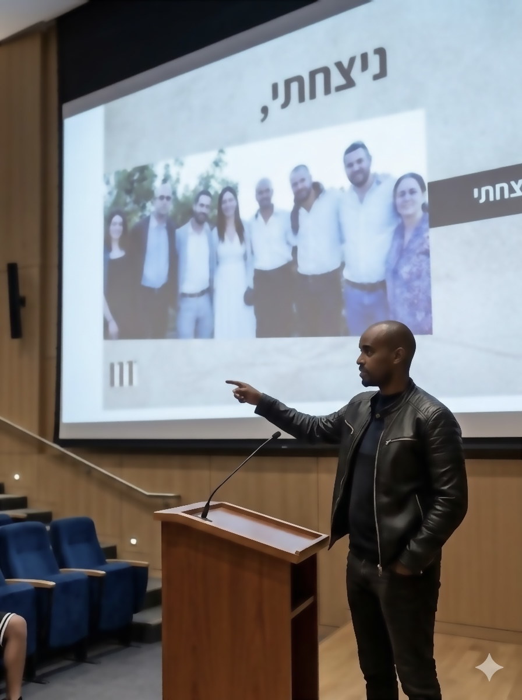
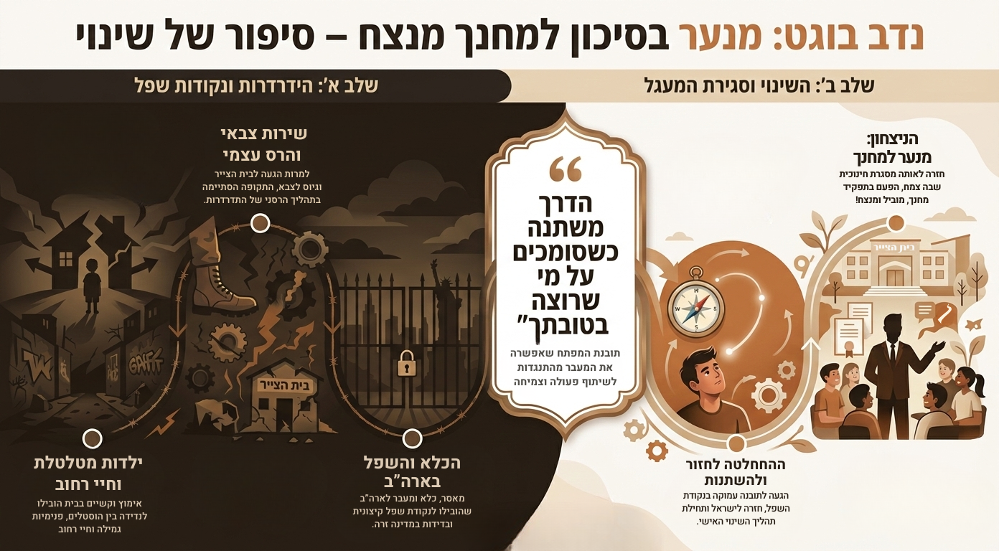

מהתהום אל קדמת הכיתה.
"הדרך משתנה כשסומכים על מי שרוצה בטובתך"מנער רחוב שנפלט מכל מסגרת, עבר דרך חיי פשע ומאסר – ועד לחזרה לאותן המסגרות כמחנך וכדמות סמכות מובילה.
אני כאן כדי לשרטט עבור בני הנוער והצוותים את מפת הדרכים חזרה למעלה.

הסיפור שלי: תעודת זהות ללא פילטרים
אני לא רק מרצה; אני כאן כדי לשרטט עבור בני הנוער והצוותים שמלווים אותם את מפת הדרכים חזרה מהתהום. הסיפור שלי הוא עדות עוצמתית לטרנספורמציה בלתי אפשרית לכאורה.
כילד שגדל בצל האימוץ והתמודד עם תחושת חוסר שייכות עמוקה, מצאתי את עצמי מהר מאוד במסלול של הרס עצמי. מנער שנפלט מכל מסגרת, עברתי דרך חיי רחוב והגעתי עד למאסר.
אבל נקודת המפנה שלי הייתה הבחירה האקטיבית בחיים ובאמונה במערכת. רגע השיא בסיפור הוא חזרתי למסגרת "בית הצייר" – המקום שבו שהיתי כנער בסיכון – אך הפעם, כאיש חינוך מן המניין המדריך את הדור הבא.
אל מול כל הקשיים והנסיבות, אני מביט לאחור ואומר את המילה שפעם נראתה רחוקה מכל דמיון: "ניצחתי." זהו ניצחון של הבחירה על הגורל.
ניסיון חיים פוגש פרקטיקה: נושאי הרצאות והדרכות
מגוון הרצאות, סדנאות והשתלמויות המותאמות לבני נוער, צוותי חינוך והורים.
לעגן את הלב
התמודדות עם מורכבות עולם האימוץ והאומנה, ותקווה למי שמרגיש תחושת חריגות ובדידות עמוקה.
לבחור בחיים
בניית חוסן מנטלי, בחירה אקטיבית בחיים, והכלים לשיקום האמון העצמי שאבד.
לגשר על חוסר האמון
התמודדות עם חוסר אמון בממסד, קשיי תקשורת עם סמכות, ואלימות ככלי ביטוי.
נורות אזהרה בדרך
איתור סימנים מוקדמים של מצוקה, נשירה ממסגרות, שינויי התנהגות פתאומיים, נסיגה חברתית ודיכאון אצל בני נוער.
לעצור את כדור השלג
הבנת גורמי ההידרדרות לעבריינות, חיי רחוב, ושימוש בחומרים (סמים ואלכוהול). התמודדות מול התנהגות מינית סיכונית.
כלים של הצלה
אסטרטגיות התערבות וגישות טיפוליות. קביעת גבולות ויצירת סביבה בטוחה ומובנית. התערבות מצילת-חיים במצבי אובדנות.
מעגלים של פגיעות
התמודדות עם קושי חברתי, בידוד וחוסר שייכות. כלים מעשיים למניעת חרמות, אלימות ודחייה חברתית.
סכנות במרחב הווירטואלי
הבנת עולמם של בני הנוער ברשת: זיהוי ומניעה של בריונות דיגיטלית, ופגיעות המתרחשות הרחק מעיני המבוגרים.
עבודה מערכתית מקדמת
פיתוח מקצועי והתעדכנות בגישות חדשות לטיפול בנוער. חשיבות שיתוף הפעולה הרב-מערכתי ויצירת רשת תמיכה הדוקה.
למי ההרצאה מתאימה?
התוכן מותאם אישית לכל קבוצה, מתוך הבנה של הצרכים הייחודיים בשטח:
בני נוער וצעירים
בבתי ספר, פנימיות, מכינות קדם-צבאיות, מרכזי נוער קהילתיים ותנועות נוער.
צוותי חינוך וטיפול
הרצאות והשתלמויות לאנשי חינוך, מדריכים חינוכיים, עובדים סוציאליים וצוותי פנימיות.
ארגונים ומגזר ציבורי
עמותות חברתיות, גופים ומוסדות העוסקים בשיקום ובקידום נוער בסיכון.
הורים
מפגשים המעניקים הצצה כנה לעולמם של בני נוער בסיכון וכלים ליצירת שפה משותפת ואמון.
